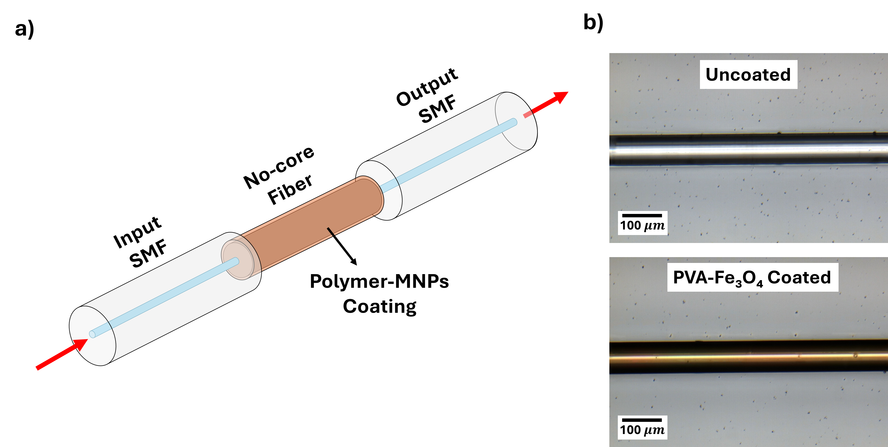
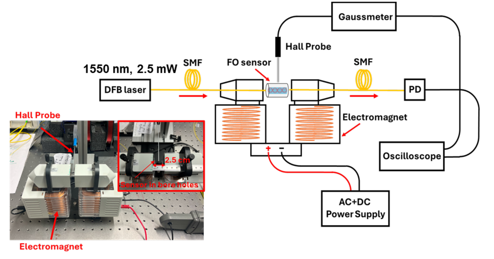
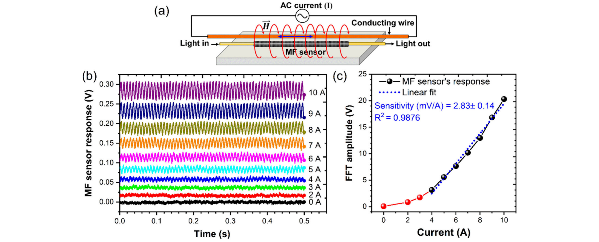

Project
Magnetic Nanoparticle Coated Optical Fibers for Magnetic Field Sensing
We coat optical fibers with polymer films containing magnetic nanoparticles to measure alternating magnetic fields for power grid monitoring.
Ongoing

Project
We coat optical fibers with polymer films containing magnetic nanoparticles to measure alternating magnetic fields for power grid monitoring.
Ongoing
Monitoring the magnetic fields around transformers and reactors reveals their operating condition. Conventional electrical sensors are affected by electromagnetic interference and require electrical connections near high-voltage components. Optical fiber sensors carry the signal as light rather than electrical current, so they are electrically insulating and immune to this interference.
Our sensor uses a fiber section in which light travels along multiple paths and recombines, making the output sensitive to the surrounding material. Our group first demonstrated this approach using a ferrofluid, a liquid containing magnetic nanoparticles, as the coating. Building on this work, we are developing solid polymer coatings in which iron oxide nanoparticles are held in place. An alternating magnetic field changes the optical properties of the coating and modulates the transmitted light. We have tested these sensors on an energized power reactor and are modeling how the coating converts magnetic fields into optical signals.
The sensor is based on a single-mode–no-core–single-mode (SNS) fiber structure, in which multimode interference (MMI) in the no-core section makes the transmitted intensity at a fixed wavelength sensitive to the optical properties of the surrounding medium. Our group demonstrated AC magnetometry for power grid monitoring by cladding this structure with a nano-ferrofluid, where field-induced particle chaining and rotation contribute to the optical response.
To obtain a solid, mechanically stable sensing layer, we coat the no-core section with a polyvinyl alcohol (PVA)–Fe3O4 nanocomposite by dip-coating. Under sinusoidal AC fields at 60 and 300 Hz with amplitudes from 50 to 700 G, the polymer–MNP and ferrofluid sensors showed distinct harmonic signatures, which were compared using Fourier and signal-to-noise analyses. We further evaluated polymer–MNP probes for phase-resolved magnetic field sensing on an energized three-phase reactor, as part of a fiber-optic sensing platform for grid-edge asset monitoring.



This material is based upon work supported by the U.S. Department of Energy's Office of Energy Efficiency and Renewable Energy (EERE) under the Solar Energy Technologies Office Award Number DE-EE0009632.